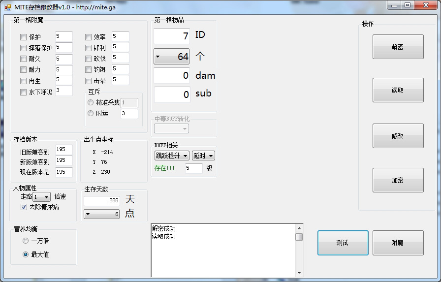

支持版本r105+(待确认)
运行要求Microsoft .net framework 4.5及以上
下载地址:MITE存档修改器v1.1
更新日志：
v1.1
1.修复dam和sub数据溢出错误，支持MITE新添加怪物的刷怪蛋
详情参见MITE ID网页【刷怪蛋】
功能演示视频版https://www.bilibili.com/video/av35446456
功能简介文字版
一、存档版本
待测试功能
已知不能让主要分支和实验分支兼容
构想实现的功能：
譬如主要分支版本195只兼容到194
我们可以读取191的存档
修改三个值为195，
让195版本可以读取191的存档。
二、出生点坐标
读取存档内出生点坐标，
实际测试与传送门偏差±16左右
该功能可配合坐标读取软件，
在初期发展选建家地址时使用
三、人物属性
会先读取，超过5倍速会修正为1倍速
1、走路N倍速
修改基础移动速度
1倍为默认移速
与药水、附魔兼容
2、去除糖尿病
勾选则将血糖值改为0
四、生存天数
会先读取，精确到小时
功能1：植物催熟（枯）
功能2：蓝月赏景
功能3：跳过夜晚（有必要吗）
五、营养均衡
二选一，不选则不修改
最大值：相当于一碗牛肉汤的营养值
一万倍：牛肉汤营养的一万倍
六、第一格物品
假如你第一格有物品（譬如草种子）
根据MITE ID表修改对应值
你甚至可以攥着64个地幔方块在手里
目前只支持第一格物品的修改
如果没有物品则不更改
七、中毒BUFF转化
吃蜘蛛眼或腐肉的buff
将其转化为
夜视
跳跃提升
速度
隐身
水下呼吸
力量
生命恢复
抗性提升
防火
可重复使用堆叠10种
八：BUFF相关
挑选一个已有的buff修改
(会检测是否存在，不存在则修改无效）
持续时间
默认：持续时间改为8分钟
消除：持续时间改为2秒
延时：持续时间改为74565天
buff等级
默认值为1，游戏内1级，
有等级的可以更改等级，
譬如速度，填入3，则游戏内速度III
以此类推，最大127
建议10以内。
注意：睡觉过夜会清除所有药水效果
九、物品附魔说明
附魔前清空背包，只把要附魔的物品放第一格
注意：建议附一次魔就重启软件，否则可能会无法读档。
无法读档也不要担心，程序会自动备份文件到目录里【备份】文件夹
你可手动回档
附魔前看下品质，软件内要改为一样
1：品质变化会触发作弊检测
2：触发检测可以用快递中转的方式保留
附魔等级
默认值为附魔台可附的最大值。
理论上可以填1-32767
但是不要填太高，10以内就好
譬如抢夺、屠宰、收割，填上1000掉落物就能把游戏卡崩
尽量遵循游戏内附魔规则，譬如不要给剑附效率。
摔落保护
y(摔落伤害)=x(高度)-3
减免公式没有
官方文档里
1级：约抵抗20%摔落伤害
2级：约抵抗28%摔落伤害
3级：约抵抗36%摔落伤害
4级：约抵抗44%摔落伤害
实际测试
179高度
28级 16滴血
29 10
30 8
31 6
32 3
饵钓
建议数值1-7。
因为官方文档里说：
每一级降低咬钩等待时间5秒。
在VIII（即填入8）级时，鱼咬钩速度最大化。
在IX（即填入9）级后，玩家无法钓起任何东西
再生
不穿护甲为64秒回半格
公式如下：
回血周期 = 64 / (1 + 0.5 * 附魔等级)
请自行计算
譬如
5级→18.2秒
30级→4秒
120级→1秒
击晕应该翻译成冰箱（缠绕），
只是给怪一个高等级的的迟缓debuff，
怪还是会攻击。